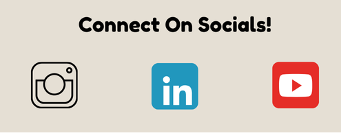
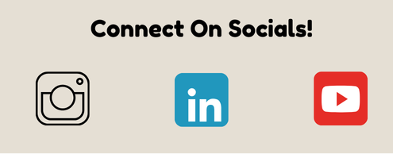

Hi! I’m Mercedes and am currently studying Global Business and Digital Arts at the University of Waterloo. During my childhood I grew up as a missionary kid in Guatemala which has shaped me into who I am today. My family and I worked at an orphanage called ‘James Project of Latin America’ in which we lead several teams from North America to serve the kids that lived on site. As a kid I always had a mindset that if I was uncomfortable it means I was pushing myself and making myself a better person, so I began living by a motto “You have to be uncomfortable in order to become comfortable”. In doing so, this unique experience has taught me leadership, translation, and missional work.
Living cross-culturally sparked my passion for helping those in need and has inspired me to study in a field in business in the hopes of launching a nonprofit that builds supportive communities around the world. I would love to create a space for children and mothers that offers family, friendship, and connection to those who need it most.
Upon moving back to Canada in 2019, it has become of particular interest to create art with the hopes of selling it one day at art galleries so I can share my story globally to spread awareness about the vulnerability that is just below North America.
Your portfolio content here.
Your resume content here.